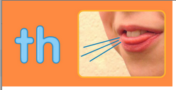

5-DARS. LETTER COMBINATIONS
1. Harf birikmasi nima?
Ikki harf birga kelib, alohida-alohida aytilmasdan bitta tovushni bildirishi mumkin. Bunday ikki harfli birikmaga digraph deyiladi.
Masalan: ship — kema.
So‘zga qaraganda harflarni ko‘ramiz, talaffuz qilganda esa birikmani birga aytamiz.
2. Ko‘p uchraydigan harf birikmalari
| Birikma | Ko‘p uchraydigan o‘qilishi | Misol | Ma’nosi |
|---|---|---|---|
| sh | “sh” | ship, fish | kema, baliq |
| ch | ko‘pincha “ch” | chair, child | stul, bola |
| th | ingliz tiliga xos ikki xil tovush | think, this | o‘ylamoq, bu |
| ph | “f” | phone, photo | telefon, surat |
| wh | ko‘pincha “w” | what, white | nima, oq |
| ck | “k” | black, clock | qora, soat |
| ng | burun orqali chiqadigan bir tovush | sing, long | kuylamoq, uzun |
3. SH birikmasi
Sh ni o‘zbekchadagi “sh”ga yaqin qilib, bitta tovushdek ayting. Harflarni “s” va “h” deb ajratib yubormang.
4. CH birikmasi va istisnolar
Ch ko‘p so‘zlarda o‘zbekchadagi “ch”ga yaqin.
Lekin har doim ham “ch” deb o‘qilmaydi. Ba’zi so‘zlarda boshqa tovush beradi:
5. PH, WH, CK va NG
PH ko‘pincha F tovushini beradi
WH ko‘p so‘zda W ga yaqin o‘qiladi
CK K tovushiga yaqin
NG bitta burun tovushidek aytiladi
Sing so‘zining oxiridagi ng ni “n” va “g” deb aniq ikki bo‘lakka ajratmasdan, birga mashq qiling.
6. TH tovushini qanday aytamiz?
Th o‘zbek tilida aynan bir xil tovushga ega emas. Til uchini yuqori va pastki tishlar orasiga ozgina chiqaring, so‘ng havo chiqaring. Tishlarni qattiq tishlamang.
Tilning uchi tishlar orasiga biroz chiqadi.
Havoni sekin chiqarib, tovushni bir necha marta mashq qiling.
think va this so‘zlaridagi th bir xil emas.

Jarangsiz TH: tomoq titramaydi
Tilning holati deyarli o‘zgarmaydi; faqat ovoz qo‘shmasdan havoni chiqaring.
Jarangli TH: tomoq titraydi
Til deyarli shu holatda turadi, lekin tovush qo‘shing. Tomoqqa qo‘l qo‘ysangiz, yengil titrashni sezishingiz mumkin.
7. Mashqlar
1. phone so‘zida qaysi ikki harf F tovushiga yaqin tovush beradi?
2. Moslashtiring: ship, chair, think — sh, ch, th.
3. chef so‘zidagi ch “ch”, “sh” yoki “k” tovushidan qaysisiga yaqin?
4. clock so‘zining oxiridagi ck qaysi tovushga yaqin?
5. think so‘zidagi th jaranglimi yoki jarangsizmi?
6. this so‘zidagi th jaranglimi yoki jarangsizmi?
1. ph. 2. ship—sh, chair—ch, think—th.
3. “sh”ga yaqin. 4. “k”ga yaqin.
5. Jarangsiz. 6. Jarangli.